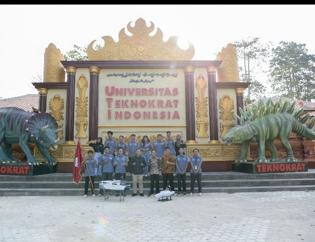
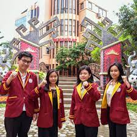
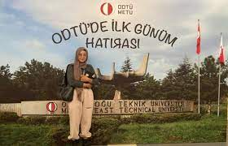

|  |  |  |
| Universitas Teknokrat Indonesia Juara Nasional Kontes Robot Terbang | Mahasiswa Universitas Teknokrat Indonesia Ukir prestasi di Kancah Regional | Membanggakan! Mahasiswa Univeristas teknokrat Indonesia Kuliah di Luar Negeri |
| Universitas Teknokrat Indonesia Robotics Team came out as the first winner of the Indonesian Thematic Robot Contest, Kontes Robot Tematik Indonesia (KRTMI), Division. | best speaker diraih oleh 3 pendebat lainnya yakni the 5th Best Speaker oleh Felissia Nofita (Sastra Inggris 2018), the 6th Best Speaker oleh Bella Devina (Sastra Inggris 2018), dan the 10th Best Speaker Tania Regina Pingkan (Akuntansi 2018) | menabjukkan mahasiswa satra inggris ikut perukaran mahasiswa internasional |